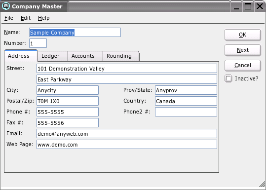
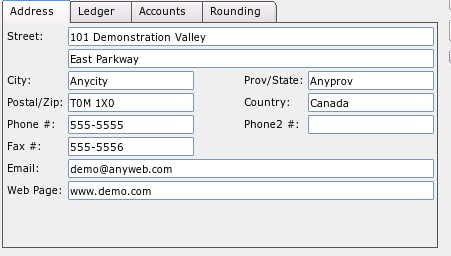
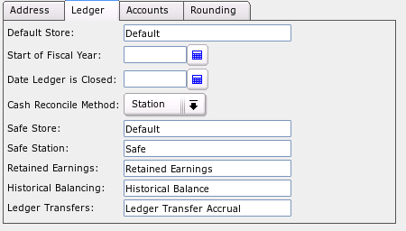
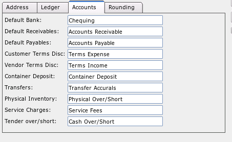
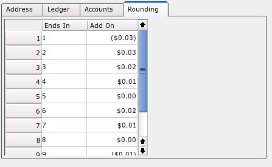

Company Master

The company master window is used to define the address, ledger specific
information, default accounts and rounding rules.
Name
The name given to the company.
Number
The number assigned to the company.
Address

This section is used to define the address of the company
Ledger

This section is used to define ledger specific information about your
company.
-
- Default Store - The default store that uses logging in will
default to.
- Start of Fiscal Year - Enter the first day of your fiscal
accounting year. Quasar requires this date to properly print financial
statements.
- Date Ledger is Closed - Enter the closing date for the
ledger. Once a date is entered, no transactions affecting the ledger accounts
may be posted to any date on or prior to the date entered.
- Cash Reconcile Method - Select Station or Employee. If "Station" is
selected then the cash reconciliation will be balanced by point-of-sale
station. If "Employee" is selected then the cash reconciliation will be
balanced by employee/cashier.
- Safe Store - Enter the store where the money is held in the safe
during cash reconciliation.
- Safe Station/Employee - Enter station/employee that acts as the
safe for cash reconciliation purposes.
- Retained Earnings - Link an account to be the retained earnings
account. The retained earnings account is a special account that displays the
current profit/loss balance in the equity portion of the balance sheet.
- Historical Balance - Link an account to be the historical balance
account. Quasar uses this historical balance for offsetting entries when
posting current customer balances, vendor balances and inventory balances.
- Ledger Transfers - Define an accrual account for ledger
transfers. When a ledger transfer takes place between two stores the balance
sheet of each store is impacted. The transfer accrual account is used to
offset the in/out postings to the ledger.
Accounts

This section is used to define default accounts to make entry easier in
Quasar.
-
- Default Bank - Define the default bank account that will be used
when creating cheques and paying bills.
- Default Receivables - Define the default receivable account that
will be used when creating new customers.
- Default Payables - Define the default payable account that will be
used when creating new vendors.
- Customers Terms Discounts - Define the default expense account
that will be used when early payment discounts are given to customers.
- Vendor Terms Discount - Define the default terms discount account
that will be used to record the income as a result of taking advantage of
early payment discounts.
- Container Deposit - Define a container deposit account. From time
to time it is necessary to purchase and sell items that have container
deposits. Quasar tracks deposit purchases and deposit sales in the container
deposit account.
- Transfers - Define an accrual account for stock transfers. When a
stock transfer takes place between two stores the balance sheet of each store
is impacted. The transfer accrual account is used to offset the in/out
postings to inventory.
- Physical Inventory - Define a default expense account for item
adjustments created by physical inventory counts. When an item quantity is
adjusted, up or down, there is a increase or reduction of the inventory
value. This change in value is offset by posting to an expense account.
- Service Charges - Define a default income account for service
charges that are charged on past due customer invoices.
- Tender Over/Short - Define a default expense account for cash
discovered as being over/short during the cash reconciliation process.
Rounding

This section is used to set your rounding rules for your company selling
prices. The rounding rules are used in the item master screen if you enter a
desired margin, the price will be calculated using the rounding. Also, there
is a "Round" button on the price batch. When you click on the "Round" button
all the prices are rounded using the rounding rules.
Price rounding rules are entered in the table. There are two columns "Ends In"
and "Add On". The ends in strings for a price of 7.47 would be "7", or
"47". So if you said "Ends In 7" and "add on .02" then the selling price would
round up to 7.49. For a price of 7.47 if you said "Ends in 47" and "add on
(0.17)" then the selling price would round down to 7.30. You can round up or
down and you can specify the rounding strings to be as long as required to
meet your rounding requirements.
Inactive?
Toggle on or off. Toggle off to set the company to inactive. Toggle on to
re-set the company to active.